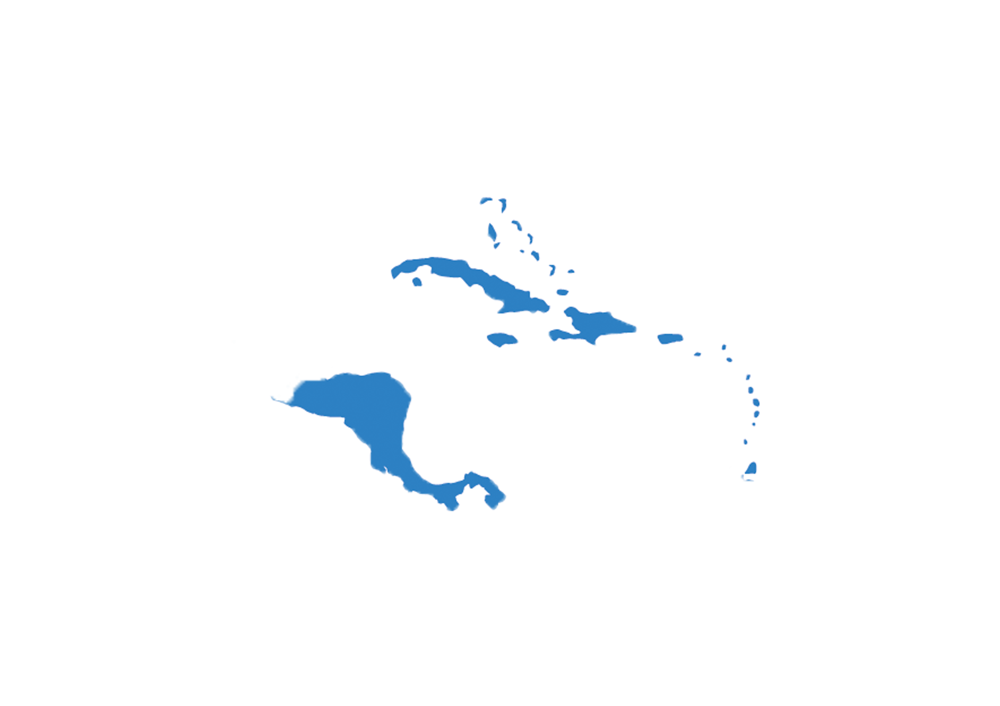

América Central
Países
É chamada também de América Central Continental. Integram essa região os seguintes países: Guatemala, Belize, El Salvador, Honduras, Nicarágua, Costa Rica e Panamá.
Economia
A economia centro-americana se baseia principalmente no agronegócio, no modelo plantation, porém, também explora outras fontes de renda, como a mineração, mas não possui muitos recursos no subsolo, a indústria, também não possuindo muitas, serviços e comércio, já que as capitais dos países possuem movimento alto.
Cultura
O idioma oficial dos países centro-americanos está ligado à colonização, sendo Espanhol e Inglês os idiomas mais comuns. Porém, o número de línguas e dialetos falados no subcontinente é enorme. Uma das línguas locais mais conhecidas é o crioulo haitiano. Assim como na América do Sul, a religião é um importante fator na cultura da América Central. Religiões cristãs são predominantes, como o catolicismo e o protestantismo. Contudo, religiões de matriz africana e de povos nativos americanos também são muito praticadas na região, como o rastafári, típico da Jamaica.
Política
O cenário político da América Central vem passando por importantes mudanças nos últimos tempos. Especialmente Costa Rica, El Salvador e Honduras demonstram essa tendência. Apesar disso, ainda é preciso cautela, pois não há garantias que as mudanças significarão um novo jeito de fazer política, voltado para o povo e não para as elites oligárquicas ultraconservadoras. Há quase um século, a Costa Rica não vivenciava eleições tão intensas.
Geografia
A América Central é um dos três subcontinentes que formam o continente América, e é composta por 20 países. Suas terras se encontram totalmente situadas no Hemisfério Norte, com a maior parcela abaixo do Trópico de Câncer. Dividida entre uma faixa ístmica, chamada também de continental, e um conjunto de ilhas, ela se estende por cerca de 2,5 milhões de km², entre a América do Norte e a América do Sul. O subcontinente centro-americano é banhado pelo oceano Pacífico, a oeste e sudoeste, e pelo mar do Caribe, a leste.
Curiosidades
- A serra Madre Ocidental, que abriga o pico mais elevado da América Central, é considerada uma das principais cordilheiras do continente Americano. Ela se estende para os países da América do Norte.
- "Os países da América Central estão sujeitos à ocorrência de diversos fenômenos naturais"
- "Ao menos 15 localidades centro-americanas, desde sítios arqueológicos a paisagens naturais, foram listadas pela Unesco como patrimônio da humanidade."